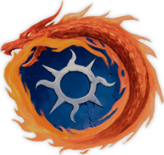

Great Scouring
| Great Scouring | |
|---|---|
| Part of the aftermath of the Horus Heresy | |
 Pict-capture of loyalist and traitor Legionaries in void combat Artwork © Games Workshop | |
| Date | 014–021.M31 (hunts for survivors continued for more than a century) |
| Location | The whole Imperium; the traitors' last refuge was the Eye of Terror |
| Result | Imperial victory; the Traitor Legions driven into the Eye of Terror or destroyed; Second Founding and the reorganisation of the Imperium |
| Belligerents | |
| Loyalists | Traitors |
| Commanders and leaders | |
 Magnus the Red | |
| ‡ Executed | |
| Strength | |
| Casualties and losses | |
| The Legions bled white by the Heresy; Caliban lost in 014.M31; the Iron Cage cost the Imperial Fists most of the force they committed | Driven from Imperial space, most into the Eye of Terror; the Traitor homeworlds and Isstvan V scoured of life; Konrad Curze executed on Tsagualsa |
The Great Scouring, or the Scouring, was the counter-offensive launched by the Imperium after the death of the Warmaster Horus at the Siege of Terra in 014.M31. It lasted seven years, to about 021.M31, and drove the surviving Traitor Legions and their allies out of Imperial space, most of them into the warp rift called the Eye of Terror.[1] Hunts for surviving warbands continued for more than a century after the formal close of the campaign.
The Scouring was the work of the Lord Commander of the Imperium, Roboute Guilliman, who had been named Imperial Regent after the Emperor of Mankind was interred on the Golden Throne. It was waged by the loyalist Legions alongside the Imperial Army, the Mechanicum and the first Inquisition, and was accompanied by the most thorough reform of the Imperium's government and army ever attempted. Its great product was the Codex Astartes, and with it the Second Founding of the Space Marines.[2]
It was also a time of violent reprisal. The Emperor had pronounced judgment on the traitors before the Throne closed around him. They were declared Excommunicate Traitoris, all records of the Traitor Legions were to be expunged, and the worlds that had shown allegiance to them were to be cleansed.[1] Many of the Imperium's later conventions concerning treason and heresy owe their origins to the Scouring.
Background
[edit]When the Heresy ended, the Imperium was shattered. The Imperial Palace had been burned black, the Emperor was a broken husk, and many of the great worlds of the crusade had been devastated. The Legions were bled white: those that had fought on Terra were reduced, those that had suffered at Isstvan V were barely alive, and the Ultramarines, spared the worst of the siege by the fighting at Calth, were the strongest.[1] The Traitor Legions had been broken at Terra but not destroyed. They retreated, scattered, and fought on.
The Imperium also faced opportunists. Many worlds had stayed out of the war, or declared independence in the confusion, and the Orks, the Aeldari raiders and other xenos powers fell on frontier worlds that had been stripped of defenders. The Scouring was therefore fought on two fronts, against the Traitors and against those who profited from the Imperium's weakness.[1]
Course of the war
[edit]The Regent
[edit]The loyalist primarchs who had survived, among them Rogal Dorn, Roboute Guilliman, Leman Russ and Jaghatai Khan, met on Terra in 014.M31 to decide the course of the war. The council chose Guilliman as the Lord Commander and Regent. He was the greatest strategist alive after the Emperor's withdrawal, and his Legion was in the best condition to fight.[2] Rogal Dorn, who had commanded the defence of the Palace, took the title of Praetorian of Terra.
The hunt
[edit]
The Traitor Legions fled in the hundreds of broken fleets. They were pursued by loyalist fleets and by Army and Navy detachments. The campaign had no single front: a Legion's survivors would hole up in a fortress world, or in a forgotten system, or a stretch of the Warp, and the loyalist task forces fell on them in turn.[1] Systems believed to be tainted were purified. Worlds that had been beyond redemption, among them Isstvan V and the home worlds of the Traitor Legions, were scoured of life.

The loyalist Legions followed their own agendas as the war went on. The Dark Angels, who had been absent from the Heresy's most terrible fights and who lost Caliban in about 014.M31, pursued the Traitors and the Fallen with a particular fury. The Space Wolves, the Iron Hands and the Ultramarines took on different regions of the galaxy. In the process, loyalist commanders were prone to cover up misconduct and settle old scores, and not all that was done in the name of the Emperor can be defended.[1][a]
Reconstruction of the Legions
[edit]The three Legions that had been all but destroyed at Isstvan V, the Raven Guard, the Iron Hands and the Salamanders, were slowly rebuilt from the small remnants of gene-seed and the few survivors that had escaped. The Legions of the Traitors were declared extinct in the archives. Their gene-seed was placed under time-locked stasis seals, and the Adeptus Terra began taking control of the new generation's.[2]
Into the Eye
[edit]The final act of the war was the driving of the remnants of the Traitor Legions into the Eye of Terror, the great rift opened at the birth of Slaanesh. Here, in the shifting warp-realm that no Imperial fleet could hold, they found a refuge. The Imperium fortified the approaches and posted the fortress world of Cadia, discovered in 966.M30, on the threshold of the Eye. For ten thousand years it remained the keystone of the guard.[1]
Reforms
[edit]Military
[edit]Guilliman's most important decision was to prevent any one commander from ever controlling as much power as the Warmaster had. The Imperial Army, which had until then served as a single force, was divided in about 021.M31[b] into the Imperial Guard and the Imperial Navy. The great Legions, each of a hundred thousand or more Space Marines, were to be broken up into Chapters of about a thousand warriors each, the process known as the Second Founding, carried out in 021.M31. The rules of the new order were set down in the Codex Astartes.[2]
Government
[edit]The Council of Terra became the High Lords of Terra. The Administratum and the other Adepta were formalised, and provinces were divided so that no governor held both troops and ships. In the shadow of the Scouring the first Inquisitors were commissioned to hunt the taint of Chaos wherever it surfaced.[2]
Religion
[edit]The Imperial Truth, banned religion and the Emperor's atheism, had died on the Throne with the Emperor. During the Scouring a number of cults grew up around the figure of the Emperor, and in the following centuries the largest of them, led by the Ecclesiarch, became the Imperial Cult. The cult was adopted as the official faith in the early 32nd millennium, as the Adeptus Ministorum.[1]
Aftermath
[edit]The Great Scouring was followed by the era remembered as the Time of Rebirth, in which the Imperium reorganised under its new structure and slowly recovered from the devastation. The reforms succeeded in avoiding a second civil war on the same scale. But the Imperium that emerged was harsher and more rigid than the Emperor's, and its descendant is the Imperium of the 41st millennium.[1]
The Traitor Legions that had survived were not destroyed. Their warbands, under leaders such as Abaddon the Despoiler, would return from the Eye in the Black Crusades, and the Imperium has fought them ever since. Several of the strongholds of the Scouring, such as the fortress world of Cadia, were held for ten thousand years, and the fall of Cadia in 999.M41 ended the long watch.[3]
Legacy
[edit]The Scouring is remembered as the Imperium's first great act of self-defence, and as a cruel one. The efforts of the Inquisition, the habit of purging a tainted world and the unforgiving treatment of the Traitor Legions all derive from it. In the Era Indomitus, as the Lord Commander once more fights the descendants of the Traitors, the same struggle has begun again.[4]
Timeline
[edit]| Date | Event |
|---|---|
| 014.M31 | Horus slain in the Siege of Terra; the Emperor interred on the Golden Throne and the Traitor Legions declared Excommunicate Traitoris. |
| 014.M31 | Council of the surviving primarchs on Terra; Roboute Guilliman named Lord Commander and Regent, Rogal Dorn Praetorian of Terra. The Scouring begins. |
| c. 014.M31 | Fall of Caliban; the Dark Angels begin the hunt for the Fallen. |
| 014–021.M31 | Traitor Legions pursued across the Imperium; Isstvan V and the Traitor homeworlds scoured of life. |
| c. 015.M31 | Konrad Curze executed on Tsagualsa by the Callidus assassin M'Shen.[c] |
| 017.M31 | The Underworld War on Calth ends. |
| c. 021.M31 | The Iron Cage: the Imperial Fists trapped by the Iron Warriors and relieved by Guilliman. |
| c. 021.M31 | The Codex Astartes completed; the Imperial Army divided into the Guard and the Imperial Navy. |
| 021.M31 | The Second Founding; formal close of the Scouring. The remnants of the Traitor Legions enter the Eye of Terror. |
| c. 022.M31 | Corvus Corax departs for the Eye of Terror. |
| c. 032.M31 | Castigation of Colchis, former homeworld of the Word Bearers. |
| 084.M31 | Jaghatai Khan disappears into the Webway pursuing the Drukhari. |
| 121.M31 | Battle of Thessala: Guilliman wounded by Fulgrim; the last hunts of the Scouring era end. |
| Early M32 | The Imperial Cult adopted as the state faith. |
See also
[edit]Notes
[edit]- ^ The Dark Angels' conduct in the Scouring is a subject on which the Chapter's own records and those of other Legions disagree. Later Imperial accounts record the Lion's disappearance after the Heresy; he returned in the Era Indomitus, as the First Legion's descendants now maintain.
- ^ Date estimated from the sequence of events.
- ^ Date estimated from the sequence of events.
References
[edit]- ^ a b c d e f g h i Codex Adeptus Astartes - Dark Angels (8th Edition), "Dark Heritage," pg. 10. Games Workshop. Codex Adeptus Astartes - Space Marines (8th Edition), pg. 34. Games Workshop.
- ^ a b c d e Codex Adeptus Astartes - Space Marines (7th Edition) (Digital Edition), "The Chronicles of Heroes". Games Workshop. Nightbringer (novel) - The Ultramarines Omnibus (Omnibus), Ch. 2.
- ^ Codex: Space Marines (6th Edition) (Digital Edition), "A Brotherhood at War," pg. 18. Games Workshop. Warhammer 40,000 Rulebook (6th Edition), pp. 161-162. Games Workshop.
- ^ Codex: Space Marines (5th Edition), pg. 7. Games Workshop. Warhammer 40,000 Rulebook (7th Edition), "The Age of the Imperium". Games Workshop.